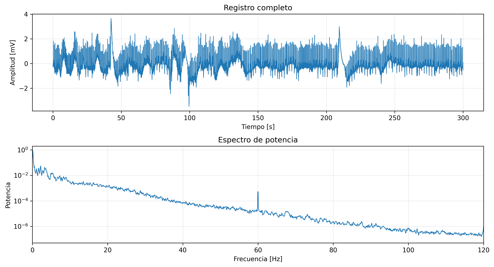
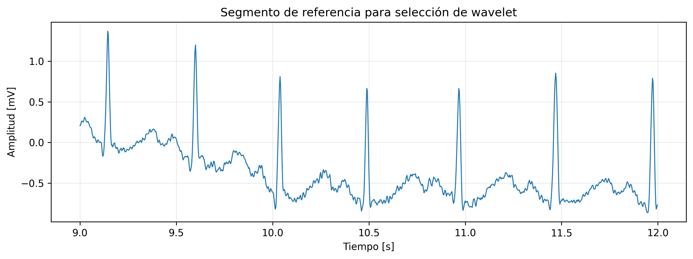
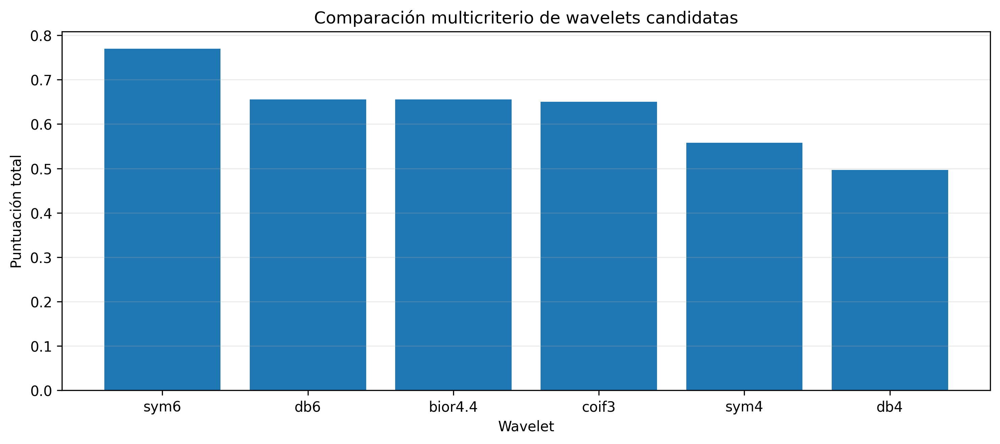
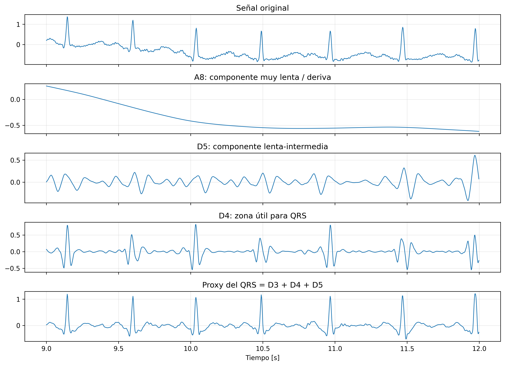
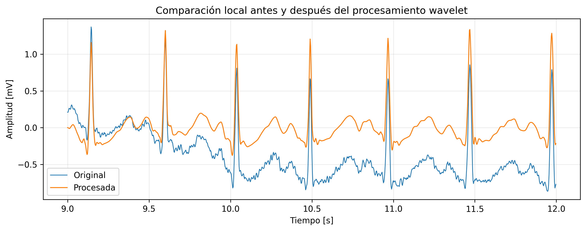
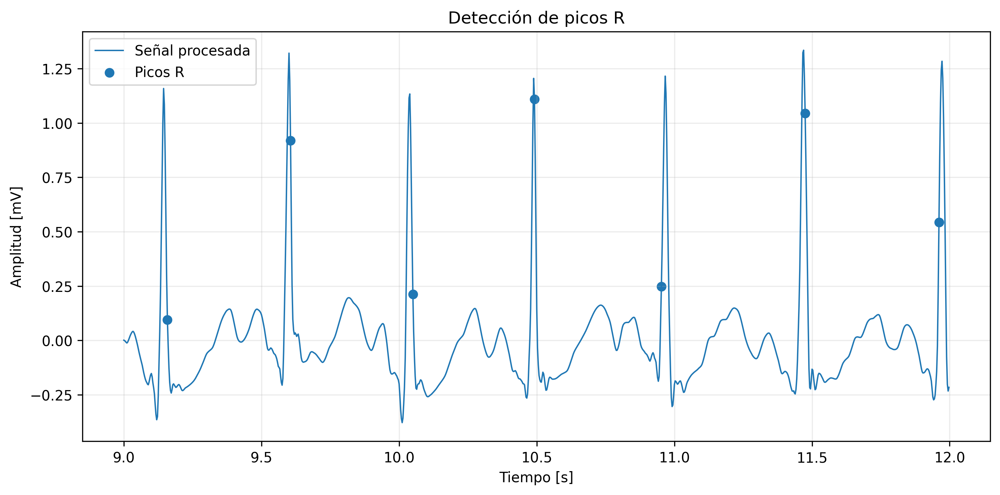
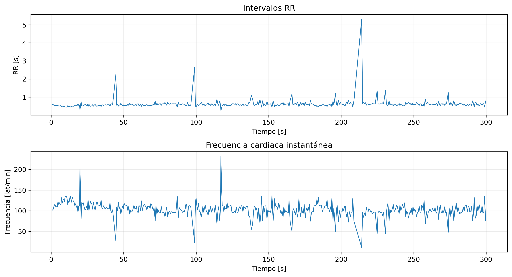
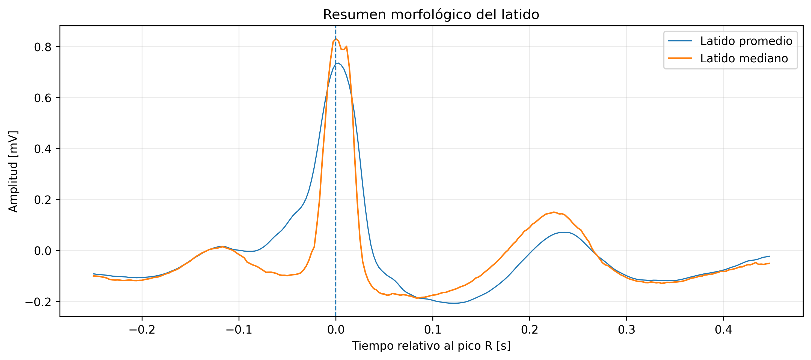
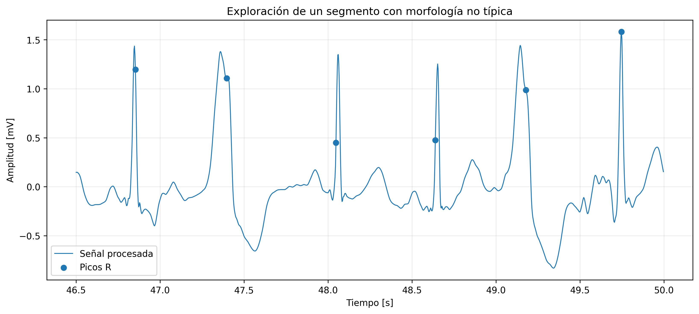

import math
import numpy as np
import pandas as pd
import matplotlib.pyplot as plt
import pywt
from IPython.display import display
from scipy.signal import find_peaks, welch
plt.rcParams["figure.dpi"] = 150
plt.rcParams["font.size"] = 10
np.random.seed(7)Selección justificada de wavelet y análisis completo de un electrocardiograma
Reporte académico
1 Resumen
Este reporte presenta un ejemplo completo de análisis de electrocardiografía basado en transformada wavelet discreta. El punto de partida no es la aplicación directa de una wavelet preseleccionada, sino la elección explícita y justificada de la wavelet a partir de criterios teóricos y empíricos. Para ello se comparan varias candidatas mediante ortogonalidad o biortogonalidad, simetría, longitud del filtro, número de momentos nulos, error de reconstrucción y capacidad para concentrar la energía del complejo QRS en niveles de detalle fisiológicamente plausibles.
Después de esa selección, se realiza un flujo completo de análisis sobre un electrocardiograma real: inspección inicial, análisis espectral, descomposición multirresolución, atenuación de deriva de línea base y ruido de alta frecuencia, construcción de una banda proxy para el complejo QRS, detección automática de picos R, estimación de intervalos RR y frecuencia cardiaca instantánea, obtención de un latido mediano y exploración de un segmento con morfologías anómalas.
El objetivo no es producir un sistema clínico final, sino un ejemplo didácticamente sólido, metodológicamente explícito y computacionalmente reproducible para estudiantes de pregrado en ingeniería biomédica.
2 Propósito y alcance
En análisis de electrocardiografía, la elección de la wavelet no es un detalle cosmético. La wavelet condiciona la localización temporal, la robustez frente a ruido, la fidelidad de reconstrucción y la forma en que la energía del complejo QRS, de la onda P, de la onda T y de la deriva de línea base se distribuye a través de los distintos niveles de detalle y aproximación.
Por esa razón, este reporte adopta una estrategia en dos fases. En la primera fase, se define un esquema de selección de wavelet y se aplica sobre un segmento relativamente limpio del electrocardiograma. En la segunda fase, se utiliza la wavelet seleccionada para un análisis más completo del registro.
Este documento tiene un carácter formativo. No constituye un dispositivo de diagnóstico, ni reemplaza validación clínica, ni sustituye bases de datos anotadas por expertos para evaluación formal.
AdvertenciaAdvertencia metodológica
La descomposición wavelet es una representación matemática útil. No debe confundirse con una conclusión clínica. Además, la supresión agresiva de componentes de baja frecuencia puede ser inadecuada cuando el objetivo es análisis del segmento ST o de la onda T.
3 Fundamento conceptual de la elección de la wavelet
La elección de la wavelet no debe presentarse como una preferencia estética ni como una decisión basada en tradición bibliográfica. Debe formularse como un problema de selección multicriterio en el que cada candidata se evalúa por propiedades matemáticas de la base y por su comportamiento efectivo sobre la señal de interés. En electrocardiografía, esto es especialmente importante porque la wavelet elegida altera la precisión temporal con la que se representan los transitorios del complejo QRS, la separación entre componentes lentas y rápidas, y la estabilidad de la reconstrucción posterior.
En este documento, la selección se apoya en cinco criterios principales. Los cuatro primeros describen propiedades intrínsecas de la wavelet; el quinto verifica si esa wavelet realmente organiza la energía del electrocardiograma de una manera fisiológicamente razonable. Más adelante, en la implementación computacional, estos criterios se transforman en puntuaciones comparables para construir una clasificación reproducible entre candidatas.
3.1 Criterio 1. Ortogonalidad o biortogonalidad
La ortogonalidad indica que las funciones de la base son mutuamente ortogonales, lo que favorece descomposiciones energéticamente consistentes y reconstrucciones estables. La biortogonalidad relaja esa condición estricta, pero conserva una estructura de análisis y síntesis bien definida, muy útil cuando se desea combinar reconstrucción estable con propiedades de simetría.
En este reporte, este criterio no se mide de forma subjetiva, sino consultando directamente los atributos lógicos que PyWavelets asigna a cada wavelet discreta. Si la wavelet es ortogonal, recibe la mayor valoración. Si no es ortogonal pero sí biortogonal, recibe una valoración intermedia. Si no satisface ninguna de las dos propiedades, recibe una penalización explícita. En términos operacionales, la medición se implementa como una puntuación categórica:
\[ S_{\text{ort}} = \begin{cases} 1.00, & \text{si la wavelet es ortogonal} \\ 0.80, & \text{si no es ortogonal pero sí biortogonal} \\ 0.40, & \text{si no cumple ninguna de las dos propiedades} \end{cases} \]
La lógica de esta escala es directa: se privilegia la ortogonalidad, se acepta la biortogonalidad como alternativa técnicamente sólida y se desincentivan wavelets sin ninguna de estas dos estructuras cuando el objetivo es un análisis didáctico con reconstrucción interpretable.
3.2 Criterio 2. Simetría
La simetría es relevante porque una wavelet más simétrica tiende a introducir menor distorsión temporal o de fase en la representación de transitorios. En una señal como el electrocardiograma, esto importa porque los puntos fiduciales —por ejemplo, el máximo del complejo QRS— deben conservar una localización temporal razonablemente estable después de la descomposición y la reconstrucción parcial.
Aquí la medición también se hace a partir de la metainformación formal de la wavelet. PyWavelets clasifica esta propiedad con etiquetas como symmetric, near symmetric o asymmetric. En lugar de dejar esa descripción en lenguaje natural, el documento la convierte en una escala numérica ordinal para que pueda entrar en la puntuación multicriterio:
\[ S_{\text{sim}} = \begin{cases} 1.00, & \text{si la simetría es } \texttt{symmetric} \\ 0.90, & \text{si la simetría es } \texttt{near\ symmetric} \\ 0.55, & \text{si la simetría es } \texttt{asymmetric} \end{cases} \]
No se trata de una medición geométrica exacta de la simetría del filtro, sino de una traducción operativa de la clasificación estructural reportada por la biblioteca. Su función es introducir, de manera explícita, la preferencia por wavelets que reduzcan deformaciones temporales en eventos estrechos.
3.3 Criterio 3. Compacidad temporal, medida mediante la longitud del filtro
En el contexto de este documento, la compacidad temporal se aproxima mediante la longitud del filtro de descomposición, denotada por dec_len. Cuanto más corto es el filtro, menor es su soporte efectivo y, por tanto, mejor suele ser la localización temporal de transitorios breves. El costo de esa ventaja es que filtros muy cortos pueden perder poder de separación espectral o robustez frente a ciertas formas de ruido.
La medición comienza extrayendo la longitud del filtro asociada a cada candidata. Sin embargo, como una longitud menor es preferible, no se usa directamente dec_len, sino su inverso:
\[ C_{\text{raw}} = \frac{1}{L}, \]
donde (L) es la longitud del filtro. Después, para que las wavelets comparadas queden en una misma escala numérica, ese valor se normaliza al intervalo ([0,1]) con una transformación mínimo-máximo:
\[ S_{\text{comp}} = \frac{C_{\text{raw}} - C_{\min}}{C_{\max} - C_{\min}}. \]
Esta forma de medición expresa con claridad la compensación fundamental: una wavelet con filtro corto obtiene mejor puntuación de compacidad porque favorece localización temporal, pero no necesariamente será la mejor en los demás criterios.
3.4 Criterio 4. Número de momentos nulos
Los momentos nulos cuantifican la capacidad de la wavelet para anular polinomios de bajo grado y, en consecuencia, para separar mejor componentes suaves de cambios abruptos. En términos prácticos, una wavelet con más momentos nulos suele representar con mayor eficiencia transitorios localizados sobre fondos lentos. Esto resulta pertinente cuando se desea atenuar deriva de línea base y, al mismo tiempo, conservar información útil del complejo QRS.
La medición utilizada en el documento toma directamente el atributo vanishing_moments_psi de cada wavelet. Ese valor, por sí solo, no es aún comparable entre candidatas con escalas distintas; por ello se normaliza nuevamente al intervalo ([0,1]):
\[ S_{\text{vm}} = \frac{M - M_{\min}}{M_{\max} - M_{\min}}, \]
donde (M) es el número de momentos nulos de la wavelet analizada. Esta normalización no elimina la compensación estructural ya conocida: aumentar momentos nulos suele implicar filtros más largos. Precisamente por eso este criterio no se usa de manera aislada, sino en conjunto con la compacidad temporal.
3.5 Criterio 5. Concentración empírica de energía del complejo QRS
Los cuatro criterios anteriores describen propiedades de la wavelet en abstracto. Sin embargo, una selección metodológicamente seria exige además verificar cómo se comporta la candidata sobre la señal concreta. Para eso se introduce un criterio empírico: medir qué fracción de la energía de detalle queda concentrada en los niveles que, para la frecuencia de muestreo del registro, son compatibles con la dinámica del complejo QRS.
Si la señal está muestreada a (f_s = 360,), una descomposición diádica ideal asocia a cada nivel de detalle (D_j) una banda aproximada
\[ \left[\frac{f_s}{2^{j+1}},\; \frac{f_s}{2^j}\right]. \]
Con esta relación, los niveles (D_3), (D_4) y (D_5) cubren aproximadamente los intervalos 22.5–45 Hz, 11.25–22.5 Hz y 5.625–11.25 Hz. Para fines docentes, esa zona constituye una región razonable donde debería concentrarse una parte importante de la energía asociada al complejo QRS.
La medición se realiza en cuatro pasos. Primero, se descompone el segmento de referencia con la wavelet candidata. Segundo, se reconstruye por separado cada componente de detalle (D_j) en el dominio temporal. Tercero, se calcula la energía de cada componente como
\[ E_j = \sum_n D_j[n]^2. \]
Finalmente, se calcula la razón entre la energía acumulada en los niveles objetivo y la energía total de detalle:
\[ R_{\text{QRS}} = \frac{E_3 + E_4 + E_5}{\sum_{j=1}^{J} E_j}, \]
ajustando la suma superior al máximo nivel disponible en el segmento. Cuanto mayor sea esta razón, mayor es la capacidad de la wavelet para concentrar la energía del electrocardiograma en una región de escalas coherente con el complejo QRS. En la fase de clasificación, esta razón también se normaliza al intervalo ([0,1]) para hacerla comparable con los demás criterios.
En síntesis, la selección propuesta no se apoya en una sola propiedad. Una wavelet adecuada para este problema debe exhibir una estructura matemática conveniente, mantener una localización temporal razonable, ofrecer suficiente capacidad de separación entre tendencias suaves y transitorios, y demostrar sobre la señal real que concentra la energía del complejo QRS en niveles esperables. Esa combinación de criterios es la que convierte la elección en una decisión justificable y reproducible.
Antes de pasar a la implementación, conviene aclarar un punto adicional. En la etapa operacional del documento aparecerá también el error relativo de reconstrucción. Ese valor no forma parte de los cinco criterios conceptuales principales, sino que funciona como verificación numérica complementaria: si dos wavelets son competitivas según los cinco criterios anteriores, una reconstrucción más fiel ofrece un argumento adicional a favor de la candidata seleccionada.
4 Entorno computacional y carga del electrocardiograma
def soft_threshold(x, lam):
x = np.asarray(x)
return np.sign(x) * np.maximum(np.abs(x) - lam, 0.0)
def moving_average(x, window):
window = max(1, int(window))
kernel = np.ones(window, dtype=float) / window
return np.convolve(x, kernel, mode="same")
def normalize_minmax(values):
arr = np.asarray(values, dtype=float)
if np.allclose(arr.max(), arr.min()):
return np.ones_like(arr)
return (arr - arr.min()) / (arr.max() - arr.min())
def symmetry_score(symmetry_text):
symmetry_text = str(symmetry_text).strip().lower()
if symmetry_text == "symmetric":
return 1.00
if symmetry_text == "near symmetric":
return 0.90
if symmetry_text == "asymmetric":
return 0.55
return 0.60
def ortho_score(w):
if getattr(w, "orthogonal", False):
return 1.00
if getattr(w, "biorthogonal", False):
return 0.80
return 0.40
def reconstruct_component(coeffs, wavelet_name, level, component_level=None, approx=False, mode="symmetric", target_len=None):
blank = [np.zeros_like(c) for c in coeffs]
if approx:
blank[0] = coeffs[0].copy()
else:
if component_level is None:
raise ValueError("Debe especificarse component_level cuando approx=False.")
idx = level - component_level + 1
blank[idx] = coeffs[idx].copy()
rec = pywt.waverec(blank, wavelet_name, mode=mode)
if target_len is not None:
rec = rec[:target_len]
return rec
def approximate_band(fs, j):
low = fs / (2 ** (j + 1))
high = fs / (2 ** j)
return low, high
def extract_beats(signal, peaks, fs, pre_s=0.25, post_s=0.45):
pre = int(pre_s * fs)
post = int(post_s * fs)
beats = []
valid_peaks = []
for p in peaks:
if p - pre >= 0 and p + post < len(signal):
beats.append(signal[p - pre : p + post])
valid_peaks.append(p)
if len(beats) == 0:
return np.empty((0, pre + post)), np.array([], dtype=int), np.arange(-pre, post) / fs
return np.vstack(beats), np.asarray(valid_peaks), np.arange(-pre, post) / fs
def generate_synthetic_ecg(fs=360, duration_s=60):
t = np.arange(0, duration_s, 1/fs)
x = np.zeros_like(t)
rr = 0.86
beat_times = np.arange(0.6, duration_s - 0.6, rr)
for bt in beat_times:
tau = t - bt
x += 0.08 * np.exp(-((tau + 0.20) ** 2) / (2 * 0.018 ** 2)) # P
x += -0.12 * np.exp(-((tau + 0.03) ** 2) / (2 * 0.008 ** 2)) # Q
x += 1.15 * np.exp(-(tau ** 2) / (2 * 0.010 ** 2)) # R
x += -0.25 * np.exp(-((tau - 0.03) ** 2) / (2 * 0.010 ** 2)) # S
x += 0.28 * np.exp(-((tau - 0.28) ** 2) / (2 * 0.055 ** 2)) # T
baseline = 0.12 * np.sin(2 * np.pi * 0.33 * t)
hf_noise = 0.025 * np.random.randn(t.size)
mains = 0.015 * np.sin(2 * np.pi * 60 * t)
x = x + baseline + hf_noise + mains
return x, fs, "Señal sintética de respaldo"try:
from scipy.datasets import electrocardiogram
ecg = electrocardiogram()
fs = 360
ecg_source = (
"scipy.datasets.electrocardiogram() "
"(extracto del registro 208, derivación MLII, MIT-BIH Arrhythmia Database)"
)
except Exception:
ecg, fs, ecg_source = generate_synthetic_ecg()
time = np.arange(ecg.size) / fs
duration_s = ecg.size / fs
metadata = pd.DataFrame(
{
"Atributo": [
"Fuente",
"Frecuencia de muestreo [Hz]",
"Número de muestras",
"Duración [s]",
"Duración [min]",
"Media [mV]",
"Desviación estándar [mV]",
],
"Valor": [
ecg_source,
fs,
ecg.size,
round(duration_s, 2),
round(duration_s / 60, 2),
float(np.mean(ecg)),
float(np.std(ecg)),
],
}
)
display(metadata)| Atributo | Valor | |
|---|---|---|
| 0 | Fuente | scipy.datasets.electrocardiogram() (extracto d... |
| 1 | Frecuencia de muestreo [Hz] | 360 |
| 2 | Número de muestras | 108000 |
| 3 | Duración [s] | 300.0 |
| 4 | Duración [min] | 5.0 |
| 5 | Media [mV] | -0.165109 |
| 6 | Desviación estándar [mV] | 0.599247 |
El análisis se desarrollará sobre este registro. Si el entorno tiene acceso al conjunto de datos de SciPy, se utilizará el extracto real del registro 208 de la base MIT-BIH. Si no, el documento conserva reproducibilidad mediante una señal sintética de respaldo.
5 Inspección inicial del registro
fig, ax = plt.subplots(2, 1, figsize=(11, 6))
ax[0].plot(time, ecg, lw=0.8)
ax[0].set_title("Registro completo")
ax[0].set_xlabel("Tiempo [s]")
ax[0].set_ylabel("Amplitud [mV]")
ax[0].grid(alpha=0.25)
f, pxx = welch(ecg, fs=fs, nperseg=min(4096, len(ecg)))
ax[1].semilogy(f, pxx, lw=1.0)
ax[1].set_title("Espectro de potencia")
ax[1].set_xlabel("Frecuencia [Hz]")
ax[1].set_ylabel("Potencia")
ax[1].set_xlim(0, min(120, fs/2))
ax[1].grid(alpha=0.25)
plt.tight_layout()
plt.show()
La inspección inicial confirma que la señal contiene actividad dominante en bajas frecuencias relativas, pero también transitorios rápidos y ruido de mayor frecuencia. Esta coexistencia de escalas temporales y espectrales es precisamente el contexto en el que la transformada wavelet discreta resulta útil.
6 Segmento de referencia para la elección de la wavelet
La elección de la wavelet no debe hacerse sobre un tramo dominado por artefactos extremos. Para ello se selecciona un segmento relativamente estable, lo bastante corto para conservar homogeneidad morfológica y lo bastante largo para contener varios latidos. En este documento se usa un segmento entre 9 y 12 segundos.
selection_start = 9.0
selection_end = 12.0
i0 = int(selection_start * fs)
i1 = int(selection_end * fs)
ecg_ref = ecg[i0:i1].copy()
t_ref = time[i0:i1].copy()
ref_metadata = pd.DataFrame(
{
"Parámetro": ["Inicio [s]", "Fin [s]", "Duración [s]", "Número de muestras"],
"Valor": [selection_start, selection_end, selection_end - selection_start, len(ecg_ref)],
}
)
display(ref_metadata)| Parámetro | Valor | |
|---|---|---|
| 0 | Inicio [s] | 9.0 |
| 1 | Fin [s] | 12.0 |
| 2 | Duración [s] | 3.0 |
| 3 | Número de muestras | 1080.0 |
plt.figure(figsize=(10, 3.8))
plt.plot(t_ref, ecg_ref, lw=1.0)
plt.title("Segmento de referencia para selección de wavelet")
plt.xlabel("Tiempo [s]")
plt.ylabel("Amplitud [mV]")
plt.grid(alpha=0.25)
plt.tight_layout()
plt.show()
7 Criterios operacionales de selección
En este reporte, la selección se realiza mediante una puntuación multicriterio de carácter didáctico. No pretende ser universal, pero sí explícita y reproducible. Cada wavelet recibe puntuaciones parciales en los siguientes ejes:
- Ortogonalidad o biortogonalidad. Se favorecen reconstrucciones estables.
- Simetría. Se prefiere menor distorsión temporal.
- Compacidad. Se favorecen filtros más cortos para buena localización temporal.
- Momentos nulos. Se valora la capacidad de separar componentes suaves y transitorios.
- Concentración empírica de energía del QRS. Se evalúa qué fracción de la energía de detalle cae en niveles fisiológicamente plausibles para el QRS.
- Error de reconstrucción. Se verifica que la wavelet reconstruya numéricamente el segmento con error despreciable.
El criterio empírico de concentración de energía usa las bandas aproximadas asociadas a una descomposición diádica. Para una señal muestreada a 360 Hz, los niveles (D_3), (D_4) y (D_5) cubren aproximadamente 22.5–45 Hz, 11.25–22.5 Hz y 5.625–11.25 Hz, respectivamente. En un análisis docente del complejo QRS, esas bandas son razonables como zona objetivo.
8 Banco de wavelets candidatas
candidate_names = ["db4", "db6", "sym4", "sym6", "coif3", "bior4.4"]
weights = {
"ortogonalidad_biortogonalidad": 0.18,
"simetria": 0.22,
"compacidad": 0.18,
"momentos_nulos": 0.12,
"energia_qrs": 0.20,
"reconstruccion": 0.10,
}
weights_df = pd.DataFrame(
{
"Criterio": list(weights.keys()),
"Peso": list(weights.values()),
}
)
display(weights_df)| Criterio | Peso | |
|---|---|---|
| 0 | ortogonalidad_biortogonalidad | 0.18 |
| 1 | simetria | 0.22 |
| 2 | compacidad | 0.18 |
| 3 | momentos_nulos | 0.12 |
| 4 | energia_qrs | 0.20 |
| 5 | reconstruccion | 0.10 |
rows = []
for name in candidate_names:
w = pywt.Wavelet(name)
max_level_ref = pywt.dwt_max_level(len(ecg_ref), w.dec_len)
level_ref = min(5, max_level_ref if max_level_ref > 0 else 1)
coeffs = pywt.wavedec(ecg_ref, name, level=level_ref, mode="symmetric")
recon = pywt.waverec(coeffs, name, mode="symmetric")[: len(ecg_ref)]
reconstruction_error = np.linalg.norm(ecg_ref - recon) / np.linalg.norm(ecg_ref)
detail_energies = {}
total_detail_energy = 0.0
for j in range(1, level_ref + 1):
dj = reconstruct_component(
coeffs,
name,
level=level_ref,
component_level=j,
approx=False,
mode="symmetric",
target_len=len(ecg_ref),
)
ej = float(np.sum(dj ** 2))
detail_energies[j] = ej
total_detail_energy += ej
qrs_levels = [j for j in [3, 4, 5] if j <= level_ref]
qrs_energy = sum(detail_energies[j] for j in qrs_levels)
qrs_energy_ratio = qrs_energy / total_detail_energy if total_detail_energy > 0 else 0.0
vm = getattr(w, "vanishing_moments_psi", np.nan)
if vm is None or (isinstance(vm, float) and np.isnan(vm)):
vm = 0.0
rows.append(
{
"wavelet": name,
"familia": w.family_name,
"simetria_texto": w.symmetry,
"simetria_score": symmetry_score(w.symmetry),
"ortho_score": ortho_score(w),
"orthogonal": bool(w.orthogonal),
"biorthogonal": bool(w.biorthogonal),
"dec_len": int(w.dec_len),
"compact_raw": 1.0 / float(w.dec_len),
"vanishing_moments_psi": float(vm),
"qrs_energy_ratio": float(qrs_energy_ratio),
"reconstruction_error": float(reconstruction_error),
"max_level_ref": int(level_ref),
}
)
ranking = pd.DataFrame(rows)
ranking["compact_score"] = normalize_minmax(ranking["compact_raw"])
ranking["vm_score"] = normalize_minmax(ranking["vanishing_moments_psi"])
ranking["qrs_score"] = normalize_minmax(ranking["qrs_energy_ratio"])
ranking["reconstruction_score"] = 1.0 - normalize_minmax(ranking["reconstruction_error"])
ranking["score_total"] = (
weights["ortogonalidad_biortogonalidad"] * ranking["ortho_score"]
+ weights["simetria"] * ranking["simetria_score"]
+ weights["compacidad"] * ranking["compact_score"]
+ weights["momentos_nulos"] * ranking["vm_score"]
+ weights["energia_qrs"] * ranking["qrs_score"]
+ weights["reconstruccion"] * ranking["reconstruction_score"]
)
ranking = ranking.sort_values("score_total", ascending=False).reset_index(drop=True)
columns_to_show = [
"wavelet",
"familia",
"orthogonal",
"biorthogonal",
"simetria_texto",
"dec_len",
"vanishing_moments_psi",
"qrs_energy_ratio",
"reconstruction_error",
"score_total",
]
display(ranking[columns_to_show])| wavelet | familia | orthogonal | biorthogonal | simetria_texto | dec_len | vanishing_moments_psi | qrs_energy_ratio | reconstruction_error | score_total | |
|---|---|---|---|---|---|---|---|---|---|---|
| 0 | sym6 | Symlets | True | True | near symmetric | 12 | 6.0 | 0.987433 | 1.141234e-12 | 0.770000 |
| 1 | db6 | Daubechies | True | True | asymmetric | 12 | 6.0 | 0.985901 | 3.913680e-16 | 0.655481 |
| 2 | bior4.4 | Biorthogonal | False | True | symmetric | 10 | 4.0 | 0.986463 | 1.515739e-12 | 0.655446 |
| 3 | coif3 | Coiflets | True | True | near symmetric | 18 | 6.0 | 0.985498 | 6.362055e-16 | 0.650633 |
| 4 | sym4 | Symlets | True | True | near symmetric | 8 | 4.0 | 0.979264 | 7.027297e-13 | 0.558000 |
| 5 | db4 | Daubechies | True | True | asymmetric | 8 | 4.0 | 0.979898 | 3.970542e-16 | 0.496530 |
plt.figure(figsize=(10, 4.5))
plt.bar(ranking["wavelet"], ranking["score_total"])
plt.title("Comparación multicriterio de wavelets candidatas")
plt.xlabel("Wavelet")
plt.ylabel("Puntuación total")
plt.grid(alpha=0.25, axis="y")
plt.tight_layout()
plt.show()
9 Justificación de la wavelet elegida
selected_wavelet = ranking.loc[0, "wavelet"]
selected_family = ranking.loc[0, "familia"]
selected_summary = pd.DataFrame(
{
"Atributo": [
"Wavelet seleccionada",
"Familia",
"Puntuación total",
"Simetría",
"Longitud del filtro",
"Momentos nulos",
"Energía relativa QRS",
"Error relativo de reconstrucción",
],
"Valor": [
selected_wavelet,
selected_family,
float(ranking.loc[0, "score_total"]),
ranking.loc[0, "simetria_texto"],
int(ranking.loc[0, "dec_len"]),
float(ranking.loc[0, "vanishing_moments_psi"]),
float(ranking.loc[0, "qrs_energy_ratio"]),
float(ranking.loc[0, "reconstruction_error"]),
],
}
)
display(selected_summary)| Atributo | Valor | |
|---|---|---|
| 0 | Wavelet seleccionada | sym6 |
| 1 | Familia | Symlets |
| 2 | Puntuación total | 0.77 |
| 3 | Simetría | near symmetric |
| 4 | Longitud del filtro | 12 |
| 5 | Momentos nulos | 6.0 |
| 6 | Energía relativa QRS | 0.987433 |
| 7 | Error relativo de reconstrucción | 0.0 |
La wavelet seleccionada no debe entenderse como la “mejor” de manera absoluta. Debe entenderse como la mejor en este registro, con este esquema de ponderación y para este objetivo didáctico. Si la aplicación cambiara hacia compresión, monitoreo portátil, delineación fina de ondas P y T, o análisis robusto del segmento ST, la elección podría variar.
10 Nivel de descomposición para el análisis completo
Una vez elegida la wavelet, el siguiente problema es decidir la profundidad de la descomposición. Como la señal está muestreada a 360 Hz, una aproximación (A_8) cubre aproximadamente 0–0.703 Hz. Ese rango es útil para capturar parte importante de la deriva de línea base de muy baja frecuencia. Por ello, cuando la longitud del registro lo permite, se utilizará nivel 8.
w = pywt.Wavelet(selected_wavelet)
max_level_full = pywt.dwt_max_level(len(ecg), w.dec_len)
analysis_level = min(8, max_level_full if max_level_full > 0 else 1)
band_rows = []
for j in range(1, analysis_level + 1):
low, high = approximate_band(fs, j)
band_rows.append(
{
"Componente": f"D{j}",
"Banda aproximada [Hz]": f"{low:.3f} – {high:.3f}",
"Lectura biomédica orientativa": (
"Ruido muy rápido"
if j <= 2
else "Zona útil para QRS"
if j in [3, 4, 5]
else "Ondas más lentas"
),
}
)
band_rows.append(
{
"Componente": f"A{analysis_level}",
"Banda aproximada [Hz]": f"0.000 – {fs / (2 ** (analysis_level + 1)):.3f}",
"Lectura biomédica orientativa": "Deriva de línea base y componente muy lenta",
}
)
band_table = pd.DataFrame(band_rows)
display(band_table)| Componente | Banda aproximada [Hz] | Lectura biomédica orientativa | |
|---|---|---|---|
| 0 | D1 | 90.000 – 180.000 | Ruido muy rápido |
| 1 | D2 | 45.000 – 90.000 | Ruido muy rápido |
| 2 | D3 | 22.500 – 45.000 | Zona útil para QRS |
| 3 | D4 | 11.250 – 22.500 | Zona útil para QRS |
| 4 | D5 | 5.625 – 11.250 | Zona útil para QRS |
| 5 | D6 | 2.812 – 5.625 | Ondas más lentas |
| 6 | D7 | 1.406 – 2.812 | Ondas más lentas |
| 7 | D8 | 0.703 – 1.406 | Ondas más lentas |
| 8 | A8 | 0.000 – 0.703 | Deriva de línea base y componente muy lenta |
11 Descomposición multirresolución del electrocardiograma
coeffs_full = pywt.wavedec(ecg, selected_wavelet, level=analysis_level, mode="symmetric")
baseline_est = reconstruct_component(
coeffs_full,
selected_wavelet,
level=analysis_level,
approx=True,
mode="symmetric",
target_len=len(ecg),
)
detail_components = {}
for j in range(1, analysis_level + 1):
detail_components[f"D{j}"] = reconstruct_component(
coeffs_full,
selected_wavelet,
level=analysis_level,
component_level=j,
approx=False,
mode="symmetric",
target_len=len(ecg),
)
qrs_proxy = np.zeros_like(ecg, dtype=float)
for key in [f"D{j}" for j in [3, 4, 5] if j <= analysis_level]:
qrs_proxy += detail_components[key]zoom_start, zoom_end = 9.0, 12.0
z0, z1 = int(zoom_start * fs), int(zoom_end * fs)
tz = time[z0:z1]
fig, ax = plt.subplots(5, 1, figsize=(11, 8), sharex=True)
ax[0].plot(tz, ecg[z0:z1], lw=1.0)
ax[0].set_title("Señal original")
ax[0].grid(alpha=0.25)
ax[1].plot(tz, baseline_est[z0:z1], lw=1.0)
ax[1].set_title(f"A{analysis_level}: componente muy lenta / deriva")
ax[1].grid(alpha=0.25)
if analysis_level >= 5:
ax[2].plot(tz, detail_components["D5"][z0:z1], lw=1.0)
ax[2].set_title("D5: componente lenta-intermedia")
ax[2].grid(alpha=0.25)
else:
ax[2].axis("off")
if analysis_level >= 4:
ax[3].plot(tz, detail_components["D4"][z0:z1], lw=1.0)
ax[3].set_title("D4: zona útil para QRS")
ax[3].grid(alpha=0.25)
else:
ax[3].axis("off")
ax[4].plot(tz, qrs_proxy[z0:z1], lw=1.0)
ax[4].set_title("Proxy del QRS = D3 + D4 + D5")
ax[4].set_xlabel("Tiempo [s]")
ax[4].grid(alpha=0.25)
plt.tight_layout()
plt.show()
En esta etapa ya puede observarse una idea central del análisis wavelet. La aproximación profunda captura la componente muy lenta asociada a deriva de línea base, mientras que la suma de detalles intermedios construye una banda donde el complejo QRS aparece reforzado respecto de otros componentes.
12 Atenuación de deriva de línea base y ruido de alta frecuencia
El siguiente paso no es un “filtrado universal”, sino una estrategia pedagógica razonable para este contexto. Se atenúan los niveles más rápidos mediante umbralización suave y se elimina la aproximación profunda para reducir deriva de línea base. Esta elección sirve bien para detección de QRS, pero no debe trasladarse sin cautela a tareas donde el segmento ST o la onda T son el objeto principal.
def wavelet_denoise_ecg(signal, wavelet_name, level, mode="symmetric"):
coeffs = pywt.wavedec(signal, wavelet_name, level=level, mode=mode)
den = [c.copy() for c in coeffs]
# Eliminación de la aproximación más lenta: útil para deriva de línea base
den[0] = np.zeros_like(den[0])
for j in range(1, level + 1):
idx = level - j + 1
c = den[idx]
sigma = np.median(np.abs(c)) / 0.6745 if np.any(c) else 0.0
uth = sigma * np.sqrt(2 * np.log(c.size + 1.0))
if j in [1, 2]:
den[idx] = soft_threshold(c, uth)
elif j == 3:
den[idx] = soft_threshold(c, 0.5 * uth)
else:
den[idx] = c
rec = pywt.waverec(den, wavelet_name, mode=mode)
return rec[: len(signal)]
ecg_denoised = wavelet_denoise_ecg(ecg, selected_wavelet, analysis_level, mode="symmetric")plt.figure(figsize=(10, 4))
plt.plot(tz, ecg[z0:z1], lw=0.9, label="Original")
plt.plot(tz, ecg_denoised[z0:z1], lw=1.1, label="Procesada")
plt.title("Comparación local antes y después del procesamiento wavelet")
plt.xlabel("Tiempo [s]")
plt.ylabel("Amplitud [mV]")
plt.grid(alpha=0.25)
plt.legend()
plt.tight_layout()
plt.show()
13 Detección de picos R a partir de la banda wavelet del QRS
La detección no se realizará directamente sobre la señal original, sino sobre una representación donde el complejo QRS tenga mayor contraste. Para ello se descompone la señal procesada, se reconstruyen los detalles (D_3), (D_4) y (D_5), se suma esa banda y se suaviza su envolvente mediante un promedio móvil corto.
coeffs_den = pywt.wavedec(ecg_denoised, selected_wavelet, level=analysis_level, mode="symmetric")
qrs_proxy_den = np.zeros_like(ecg_denoised)
for j in [3, 4, 5]:
if j <= analysis_level:
qrs_proxy_den += reconstruct_component(
coeffs_den,
selected_wavelet,
level=analysis_level,
component_level=j,
approx=False,
mode="symmetric",
target_len=len(ecg_denoised),
)
envelope = moving_average(np.abs(qrs_proxy_den), window=int(0.12 * fs))
height_thr = np.median(envelope) + 0.50 * np.std(envelope)
prom_thr = 0.20 * np.std(envelope)
distance_thr = int(0.25 * fs)
r_peaks, peak_props = find_peaks(
envelope,
height=height_thr,
prominence=prom_thr,
distance=distance_thr,
)
rr = np.diff(r_peaks) / fs
hr_inst = 60.0 / rr if len(rr) > 0 else np.array([])
detection_summary = pd.DataFrame(
{
"Métrica": [
"Número de picos R detectados",
"RR mediano [s]",
"Frecuencia cardiaca mediana [lat/min]",
"Frecuencia cardiaca media [lat/min]",
],
"Valor": [
int(len(r_peaks)),
float(np.median(rr)) if len(rr) else np.nan,
float(np.median(hr_inst)) if len(hr_inst) else np.nan,
float(np.mean(hr_inst)) if len(hr_inst) else np.nan,
],
}
)
display(detection_summary)| Métrica | Valor | |
|---|---|---|
| 0 | Número de picos R detectados | 494.000000 |
| 1 | RR mediano [s] | 0.575000 |
| 2 | Frecuencia cardiaca mediana [lat/min] | 104.347826 |
| 3 | Frecuencia cardiaca media [lat/min] | 103.752494 |
segment_start, segment_end = 9.0, 12.0
s0, s1 = int(segment_start * fs), int(segment_end * fs)
mask = (r_peaks >= s0) & (r_peaks < s1)
plt.figure(figsize=(10, 5))
plt.plot(time[s0:s1], ecg_denoised[s0:s1], lw=1.0, label="Señal procesada")
plt.scatter(time[r_peaks[mask]], ecg_denoised[r_peaks[mask]], s=35, marker="o", label="Picos R")
plt.title("Detección de picos R")
plt.xlabel("Tiempo [s]")
plt.ylabel("Amplitud [mV]")
plt.grid(alpha=0.25)
plt.legend()
plt.tight_layout()
plt.show()
14 Frecuencia cardiaca instantánea y variabilidad local de intervalos RR
if len(r_peaks) > 1:
rr_times = time[r_peaks[1:]]
else:
rr_times = np.array([])
window_sec = 10
win_edges = np.arange(0, duration_s + window_sec, window_sec)
hr_win_rows = []
for left, right in zip(win_edges[:-1], win_edges[1:]):
count = np.sum((time[r_peaks] >= left) & (time[r_peaks] < right))
hr_win_rows.append(
{
"Inicio [s]": left,
"Fin [s]": right,
"Frecuencia cardiaca por ventana [lat/min]": count * 60.0 / window_sec,
}
)
hr_window_df = pd.DataFrame(hr_win_rows)
display(hr_window_df.head(12))| Inicio [s] | Fin [s] | Frecuencia cardiaca por ventana [lat/min] | |
|---|---|---|---|
| 0 | 0.0 | 10.0 | 114.0 |
| 1 | 10.0 | 20.0 | 126.0 |
| 2 | 20.0 | 30.0 | 108.0 |
| 3 | 30.0 | 40.0 | 108.0 |
| 4 | 40.0 | 50.0 | 90.0 |
| 5 | 50.0 | 60.0 | 102.0 |
| 6 | 60.0 | 70.0 | 114.0 |
| 7 | 70.0 | 80.0 | 96.0 |
| 8 | 80.0 | 90.0 | 102.0 |
| 9 | 90.0 | 100.0 | 84.0 |
| 10 | 100.0 | 110.0 | 102.0 |
| 11 | 110.0 | 120.0 | 102.0 |
fig, ax = plt.subplots(2, 1, figsize=(11, 6), sharex=False)
if len(rr_times):
ax[0].plot(rr_times, rr, lw=1.0)
ax[0].set_title("Intervalos RR")
ax[0].set_xlabel("Tiempo [s]")
ax[0].set_ylabel("RR [s]")
ax[0].grid(alpha=0.25)
if len(rr_times):
ax[1].plot(rr_times, hr_inst, lw=1.0)
ax[1].set_title("Frecuencia cardiaca instantánea")
ax[1].set_xlabel("Tiempo [s]")
ax[1].set_ylabel("Frecuencia [lat/min]")
ax[1].grid(alpha=0.25)
plt.tight_layout()
plt.show()
La serie de intervalos RR y la frecuencia cardiaca instantánea no sustituyen un estudio de variabilidad cardiaca formal, pero sí permiten construir una primera lectura temporal del registro. En un curso de pregrado, esta fase es importante porque conecta el procesamiento de señal con variables fisiológicas interpretables.
15 Latido mediano como resumen morfológico
Una vez detectados los picos R, es posible recortar ventanas centradas en cada latido y construir un latido mediano. Este paso sirve para resumir la morfología típica del registro y para mostrar cómo la detección de picos permite pasar del análisis continuo al análisis latido a latido.
beats, valid_peaks, beat_time = extract_beats(ecg_denoised, r_peaks, fs, pre_s=0.25, post_s=0.45)
if beats.shape[0] > 0:
median_beat = np.median(beats, axis=0)
mean_beat = np.mean(beats, axis=0)
else:
median_beat = np.array([])
mean_beat = np.array([])plt.figure(figsize=(10, 4.5))
if beats.shape[0] > 0:
plt.plot(beat_time, mean_beat, lw=1.0, label="Latido promedio")
plt.plot(beat_time, median_beat, lw=1.3, label="Latido mediano")
plt.axvline(0, linestyle="--", lw=1.0)
plt.title("Resumen morfológico del latido")
plt.xlabel("Tiempo relativo al pico R [s]")
plt.ylabel("Amplitud [mV]")
plt.grid(alpha=0.25)
plt.legend()
plt.tight_layout()
plt.show()
16 Exploración de un segmento con morfología anómala
El ejemplo de SciPy procedente del registro 208 contiene cambios morfológicos y episodios que incluyen latidos ectópicos. Para una inspección cualitativa se explora un segmento alrededor de 46.5 a 50 segundos, donde la propia documentación del conjunto de datos muestra morfologías distintas a las del ritmo sinusal típico.
if len(valid_peaks) >= 3:
rr_valid = np.diff(valid_peaks) / fs
rr_med = np.median(rr_valid)
candidate_idx = np.where(
(rr_valid[:-1] < 0.80 * rr_med) & (rr_valid[1:] > 1.15 * rr_med)
)[0] + 1
ectopic_candidate_peaks = valid_peaks[candidate_idx]
else:
ectopic_candidate_peaks = np.array([], dtype=int)
ectopic_summary = pd.DataFrame(
{
"Métrica": [
"Número de candidatos por patrón corto-largo",
"RR mediano global [s]",
],
"Valor": [
int(len(ectopic_candidate_peaks)),
float(np.median(np.diff(valid_peaks) / fs)) if len(valid_peaks) > 1 else np.nan,
],
}
)
display(ectopic_summary)| Métrica | Valor | |
|---|---|---|
| 0 | Número de candidatos por patrón corto-largo | 6.000 |
| 1 | RR mediano global [s] | 0.575 |
anom_start, anom_end = 46.5, 50.0
a0, a1 = int(anom_start * fs), int(anom_end * fs)
mask_r = (r_peaks >= a0) & (r_peaks < a1)
mask_e = (ectopic_candidate_peaks >= a0) & (ectopic_candidate_peaks < a1)
plt.figure(figsize=(11, 5))
plt.plot(time[a0:a1], ecg_denoised[a0:a1], lw=1.0, label="Señal procesada")
plt.scatter(time[r_peaks[mask_r]], ecg_denoised[r_peaks[mask_r]], s=35, label="Picos R")
if np.any(mask_e):
plt.scatter(
time[ectopic_candidate_peaks[mask_e]],
ecg_denoised[ectopic_candidate_peaks[mask_e]],
s=70,
marker="x",
label="Candidatos corto-largo",
)
plt.title("Exploración de un segmento con morfología no típica")
plt.xlabel("Tiempo [s]")
plt.ylabel("Amplitud [mV]")
plt.grid(alpha=0.25)
plt.legend()
plt.tight_layout()
plt.show()
En esta fase ya no se trata solo de detectar latidos, sino de leer el resultado. Un patrón corto-largo en intervalos RR no basta para clasificar una extrasístole, pero sí sirve como marcador exploratorio que merece inspección morfológica más cuidadosa.
17 Tabla final de interpretación biomédica por niveles
interpret_rows = []
for j in range(1, analysis_level + 1):
low, high = approximate_band(fs, j)
if j == 1:
interp = "Ruido muy rápido; poco interés para morfología clínica ordinaria"
elif j == 2:
interp = "Ruido muscular y parte del ruido de red según el contexto"
elif j in [3, 4]:
interp = "Complejo QRS y transitorios rápidos de mayor interés"
elif j == 5:
interp = "QRS ancho y parte de la transición hacia ondas más lentas"
elif j in [6, 7]:
interp = "Contribuciones más lentas; posible participación de P y T"
else:
interp = "Componente muy lenta; proximidad a deriva de línea base"
interpret_rows.append(
{
"Nivel": f"D{j}",
"Banda aproximada [Hz]": f"{low:.3f} – {high:.3f}",
"Interpretación biomédica orientativa": interp,
}
)
interpret_rows.append(
{
"Nivel": f"A{analysis_level}",
"Banda aproximada [Hz]": f"0.000 – {fs / (2 ** (analysis_level + 1)):.3f}",
"Interpretación biomédica orientativa": "Deriva de línea base y tendencia de muy baja frecuencia",
}
)
interpret_df = pd.DataFrame(interpret_rows)
display(interpret_df)| Nivel | Banda aproximada [Hz] | Interpretación biomédica orientativa | |
|---|---|---|---|
| 0 | D1 | 90.000 – 180.000 | Ruido muy rápido; poco interés para morfología... |
| 1 | D2 | 45.000 – 90.000 | Ruido muscular y parte del ruido de red según ... |
| 2 | D3 | 22.500 – 45.000 | Complejo QRS y transitorios rápidos de mayor i... |
| 3 | D4 | 11.250 – 22.500 | Complejo QRS y transitorios rápidos de mayor i... |
| 4 | D5 | 5.625 – 11.250 | QRS ancho y parte de la transición hacia ondas... |
| 5 | D6 | 2.812 – 5.625 | Contribuciones más lentas; posible participaci... |
| 6 | D7 | 1.406 – 2.812 | Contribuciones más lentas; posible participaci... |
| 7 | D8 | 0.703 – 1.406 | Componente muy lenta; proximidad a deriva de l... |
| 8 | A8 | 0.000 – 0.703 | Deriva de línea base y tendencia de muy baja f... |
18 Discusión
Este ejemplo permite extraer varias conclusiones didácticas.
La primera es que la elección de la wavelet puede y debe justificarse. En lugar de adoptar db4 por costumbre, aquí se la compara con alternativas como sym4, sym6, coif3 y bior4.4. Ese paso es valioso porque obliga a traducir propiedades abstractas de la wavelet en efectos concretos sobre una señal biomédica.
La segunda es que la transformada wavelet discreta resulta especialmente útil cuando el objetivo es realzar complejos QRS, reducir deriva de línea base y construir señales auxiliares para detección. El complejo QRS, por su rapidez y pendiente pronunciada, tiende a concentrarse en niveles de detalle intermedios; precisamente eso se explota en la banda proxy (D_3 + D_4 + D_5).
La tercera es que la ingeniería biomédica no debe detenerse en el procesamiento. Después del filtrado y de la detección, el flujo continúa con interpretación fisiológica: intervalos RR, frecuencia cardiaca, latido mediano y búsqueda exploratoria de morfologías no típicas.
La cuarta es que la técnica tiene límites. La eliminación directa de aproximaciones profundas puede ser útil para deriva de línea base, pero puede ser inapropiada si se requiere preservar información de muy baja frecuencia clínicamente relevante. Además, un detector simple de picos R basado en umbrales puede fallar en presencia de artefactos fuertes, latidos fusionados o ruido no estacionario severo.
19 Conclusiones
Este reporte mostró un ejemplo completo de análisis de electrocardiografía basado en transformada wavelet discreta, iniciando desde la elección explícita de la wavelet. La metodología propuesta no se apoyó en una decisión arbitraria, sino en una puntuación multicriterio que integró propiedades de la wavelet y una medida empírica de adecuación al complejo QRS.
A partir de esa elección, se realizó una descomposición multirresolución, una estrategia razonable de atenuación de deriva de línea base y ruido rápido, una detección de picos R mediante banda wavelet del QRS, una estimación de intervalos RR y frecuencia cardiaca, y una lectura exploratoria de morfologías no típicas.
Desde una perspectiva docente, el valor principal del ejemplo es que enlaza teoría de wavelets, implementación numérica y significado biomédico. Esa integración es la que debe preservarse en un curso de pregrado en ingeniería biomédica.
20 Trabajo futuro sugerido
Una continuación rigurosa de este reporte podría incorporar tres extensiones. La primera es validar el detector contra anotaciones de referencia de bases como MIT-BIH mediante sensibilidad y valor predictivo positivo. La segunda es sustituir el criterio heurístico de selección por un criterio dependiente de tarea, por ejemplo precisión de detección o error de delineación. La tercera es extender el análisis hacia separación explícita de onda P, complejo QRS y onda T en bases de datos con marcación de puntos fiduciales.
21 Referencias
PyWavelets Developers. The Wavelet object. PyWavelets Documentation. Propiedades consultadas: ortogonalidad, biortogonalidad, simetría, longitud del filtro y momentos nulos.
PyWavelets Developers. Discrete Wavelet Transform (DWT). PyWavelets Documentation. Uso de
dwt,wavedec,waverecy relación entre longitudes de coeficientes y modo de extensión.PyWavelets Developers. Multilevel DWT, IDWT and SWT. PyWavelets Documentation. Uso de descomposición multinivel y
dwt_max_level.SciPy Developers. scipy.datasets.electrocardiogram. SciPy Documentation. Registro de ejemplo de 5 minutos, 360 Hz, procedente del registro 208 de MIT-BIH.
Moody GB, Mark RG. The impact of the MIT-BIH Arrhythmia Database. IEEE Engineering in Medicine and Biology Magazine. 2001;20(3):45–50. DOI: 10.13026/C2F305
Goldberger AL, Amaral LAN, Glass L, et al. PhysioBank, PhysioToolkit, and PhysioNet: Components of a New Research Resource for Complex Physiologic Signals. Circulation. 2000;101(23):e215–e220. DOI: 10.1161/01.CIR.101.23.e215
Dinh HA, Kumar DK, Pah ND, Burton P. Wavelets for QRS detection. Australasian Physical and Engineering Sciences in Medicine. 2001;24(4):207–211. DOI: 10.1007/BF03178366
Martínez JP, Almeida R, Olmos S, Rocha AP, Laguna P. A wavelet-based ECG delineator: evaluation on standard databases. IEEE Transactions on Biomedical Engineering. 2004;51(4):570–581. DOI: 10.1109/TBME.2003.821031